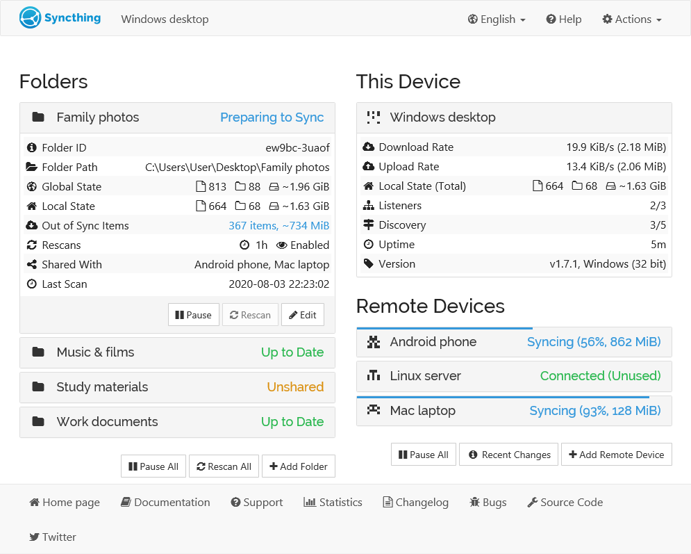

GUI 介紹¶

資料夾檢視¶
The left side of the screen shows the ID and current state of all configured folders. Clicking the folder name makes that section expand to show more detailed folder information, and buttons for pausing the folder, forcing a rescan, or editing the configuration.
A folder can be in any one of these states:
- 未知
while the GUI is loading,
- 未共享
when you have not shared this folder yet,
- 已暫停
when the folder's activity has been put on hold,
- Stopped
when the folder has experienced an error,
- Up to Date
when the folder is in sync with the rest of the devices,
- Waiting to Scan
when waiting for other folders to idle before scanning the folder,
- Scanning
while Syncthing is looking in the folder for local changes,
- Waiting to Sync
when waiting for other folders to idle before syncing the folder,
- Preparing to Sync
when Syncthing is gathering file changes to synchronize,
- Syncing
when this device is downloading changes from the network,
- Waiting to Clean
when waiting for the folder to idle before cleaning versions,
- Cleaning Versions
while removing obsolete files from the .stversions folder.
- Local Additions
when locally added or modified items are present in a receive-only folder, thus not synced to remote machines. The red button "Revert Local Changes" will revert and delete all local changes to the state advertised by remote devices.
Among the folder details, you can see the current "Global State" and "Local State" summaries, as well as the amount of "Out of Sync" data if the folder state is not up to date.
- Global State
indicates how much data the fully up to date folder contains, which is basically the sum of the newest versions of all files from all connected devices. This is the size of the folder on your computer when it is fully in sync with the remote devices.
- Local State
shows how much data the folder actually contains right now. This can be more or less than the global state, if the folder is currently synchronizing with other devices.
- Out of Sync
shows how much data needs to be synchronized from other devices. Note that this is the sum of all out of sync files - if you already have parts of such a file, or an older version of the file, less data than this will need to be transferred over the network.
- Error
describes the problem when the folder is in state Stopped. One possible message is "folder marker missing". This means that the root directory of this folder does not contain a file or directory called
.stfolder(marker). Syncthing stops when this marker goes missing to prevent data loss e.g. when the folder path was unmounted. If the marker was deleted accidentally, just recreate it and press the rescan button in the UI.
Creating a new synced folder¶
Use the Syncthing Web interface. Click the "Add Folder" button which will bring up a dialogue with the following options:
- 資料夾標籤
should be set to something descriptive. This label will initially be shared with remote devices, but can be changed on each device, as desired.
- Folder ID
has to be the same across all devices, as it is the unique identifier of the folder. Best practice is to keep the auto-generated ID to avoid conflicts with equally named folders on other devices.
- 資料夾路徑
designates the physical path to the folder, i.e. on your hard drive.
Next select with which devices to share the folder with and press add, which will add the folder and start syncing.
Device View¶
The right side of the screen shows the overall state of all configured devices. The local device is always at the top, with remote devices in alphabetical order below. For each device you see its current state and, when expanded, more detailed information. All transfer rates ("Download Rate" and "Upload Rate") are from the perspective of the local device, even those shown for remote devices. The rates for the local device are the sum of those for the remote devices. For each rate, you can see the current transfer speed, followed by the total amount of data transferred so far. You can click the current transfer speed to toggle the units between bytes and bits.